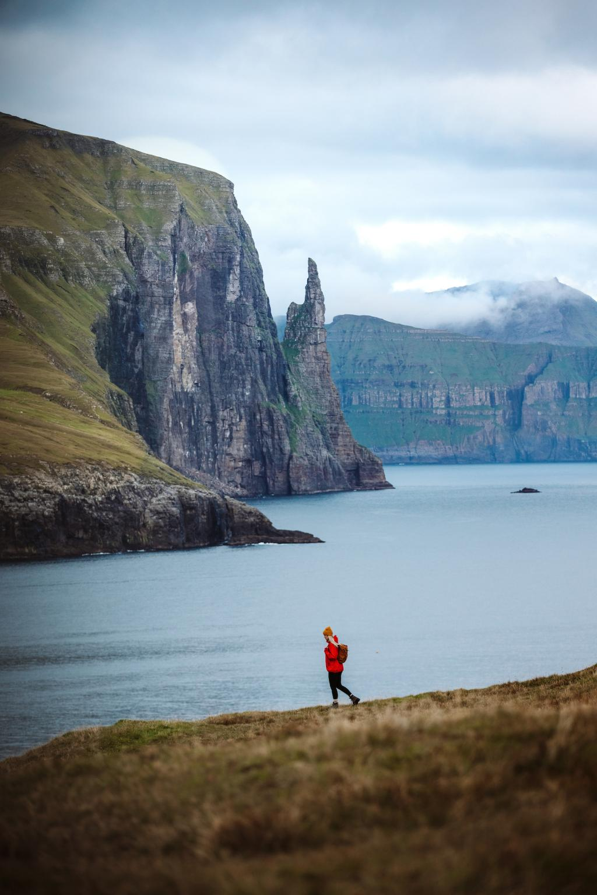
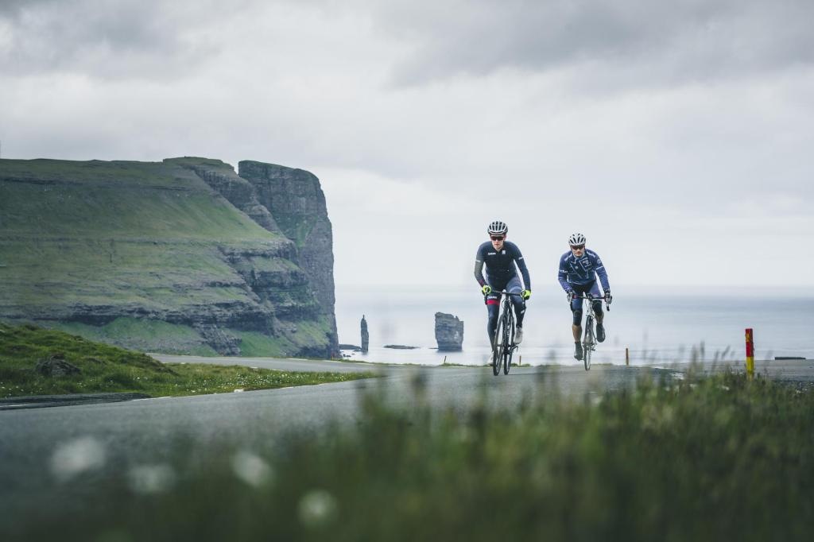
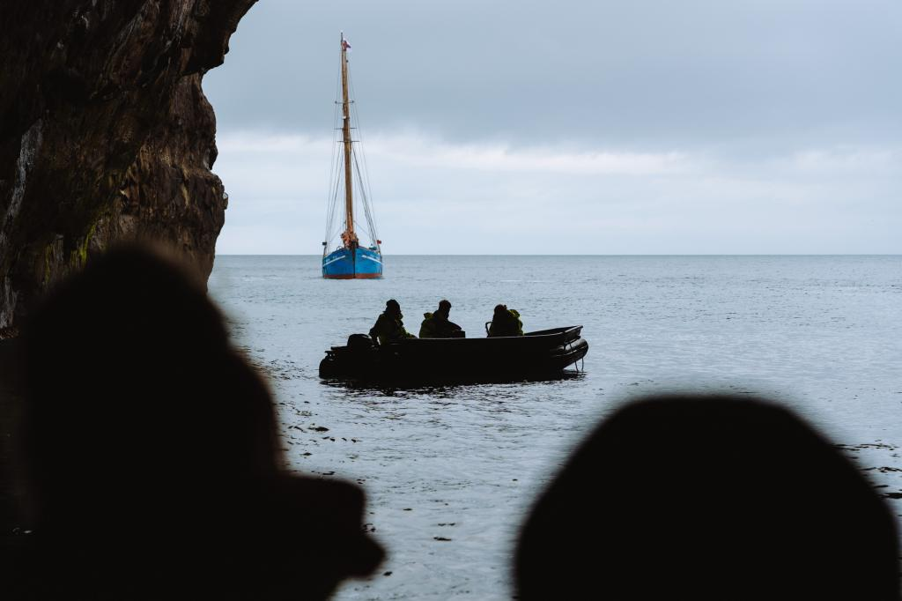
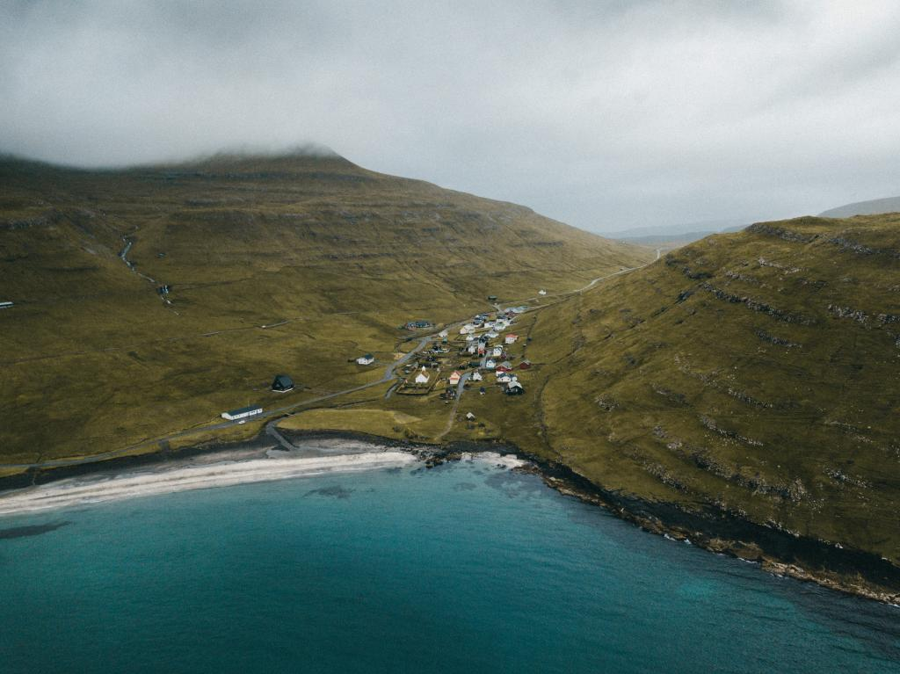

엑티비티
페로 제도에서 무엇을 하면 좋을까요?
스릴 넘치는 액티비티부터 평화로운 문화 체험까지, 페로 제도에는 다채로운 즐길 거리가 가득합니다.
숨 막히는 하이킹, 탁 트인 풍경 속 스케치 여행, 차가운 바다에서의 서핑, 새 관찰,흥겨운
문화축제,
아름다운 피오르를 따라가는 보트 투어까지, 누구나 즐길 수 있는 활동이 기다리고 있습니다.
-
 하이킹
다양하고 멋진 코스 중에서 어디를 선택하시든, 첫걸음은 당신에게 달려 있습니다.
익숙한 길을 벗어나 발길 닿는 대로 걷다 보면, 산과 계곡이 예상치 못한 놀라움과 경이로움으로 당신을 맞이할 것입니다. -
 어드벤처 스포츠
페로 제도는 단순히 휴식을 취하며 심리적인 안정을 찾기에 좋은 곳일 뿐만 아니라,
스릴 넘치는 어드벤처 스포츠를 즐기기에도 더할 나위 없이 완벽한 장소입니다. -
 바다에서
국토의 90%가 바다로 둘러싸인 페로 제도에서는 바다를 만끽하는 경험이 필수입니다.
-
 명소 & 볼거리
대서양 한가운데 고립된 이 섬들에서 무엇을 보실 수 있을지 궁금하신가요?
상상 그 이상의 다양한 매력이 당신을 기다리고 있습니다.